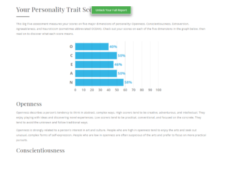

Team Profile

My name is Shaoguan Ye, and i have got a English name Logan as Shaoguan is not so friendly to pronounce, and I am now one of the member of IT MAN. The student number of mine is s3658534 and obviously the school email is s3658534@rmit.student.edu.au.
I came to Australia on 2012 December, the reason that I can remember so clearly is not only because it is my important day, but also back to 2012, there was a prediction that humanity was about to terminated on 25th December. I was feeling a bit stressed when the day has came, but eventually nothing happens, which leaves me not only relaxing but boring. Anyways, as I was born in GuangZhou, where Cantonese is originated, so I can speak both Mandarin and Cantonese since I was a child. And now, as I already lived in Australia for 8 years, I am feeling a bit familiar with English, but maybe not on oral. Also I always have interest in Japanese, as I often watch anime, so I can speak some common things in Japanese.
Apparently, I am in the second year of Business information system, however I found myself having more passions and interest in IT instead, even though they are so familiar, but I still want to change to Bachelor of IT this year, hopefully everything works out successfully.
About my hobby, it is actually related to one of the things that I am having passion to do----- building a robot model. When I was a kid, I really feel touched while watching the films or anime about robot. Therefore, I now always like to get some robot models that is in a scale of 1:100 or 1:144 to their original sizes to build.
I was not very interested in IT stuffs several years ago, back then I was willing to be a biologist. However, I found myself is terrible in Biology when I was in high school, then I change my idea to be a machanical engineer, then I found my physics is awful to be an engineer. When I lost all of my confidence in my study and future, I accidentally saw videos about hackers and robot AI design. I was feeling like I finally find the right things to do, that is IT, or back then I would say programmer. But the only IT skills that I have are those very common things, like turn the PC on and off or launching an app etc.
I am Zeyi Wu, my student number is s3798349. I was born in a small city in Guangdong Province, China. I can speak Mandarin, Cantonese and Chaoshan dialect. Because I just started living in Australia, my English is not very good. Table tennis is one of my hobbies. When I was in university in China, I used to develop projects using javafx and opengl. Since then, I have been interested in developing applications and games. Recently I have been studying unity3d by myself. Now, I am one of the members of IT MAN.
My name is Chenhao Lu, my hometown is Xi 'an, my student number is S3699365. It has been more than a year since I came to Melbourne last June. When I was in middle school, I learned the basic knowledge of computer for some time, but I didn't know too much, because I didn't have much time to learn computer at that time, but I had a strong interest in computer, so I chose to major in computer. About hobbies, I like listening to songs and playing games. When I am bored, I like to watch variety shows to relax myself.
My name is jiaging Chen and my English name is Kris. However, I am now a member of it man. My student number is s3801520, and my school email is s3801520@rmit.student.edu.au 。
I came to Melbourne in January 2020, and when I was stepping on this strange land, I met the cov-19, which was disappointing. I had five months of online classes at home, usually only in the computer screen to see lovely students and teachers. During the discussion with the group members, my English feeling is OK. I hope I can learn more through the group discussion.
Obviously, I am now a sophomore majoring in information technology. I find that I have more enthusiasm and interest in it, and I hope I can have a good time in IT field.
My hobby is to make smart glasses. When I was a kid, when I watched movies or animations about the future, I was very excited. Therefore, I always want to make some advanced intelligent devices and build them according to the industry standard.
My name is Yukun LI. Also, feels free to call me Michael. I am from China and came to Australia in November 2017 when I was 15 years old. After the half of years study in language school and three years of high school education, now I become a student of RMIT. Also I feel happy to choose IT. As a number of our group—IT men. My student number is: s3845821 and my school email is s3845821@rmit.student.edu.au happy to make more fridents.
As I introduce in my personal profile, my favourite sport is soccer, I am a loyal fan of Barcelona football club. Messi is my idol and I fall in love with him when I saw his unbelievable skill in 2014 world cup. Also I’m interesting in computer games such as league of legends. So I usually image if a can product one game in the future. But I never go through the area of the IT and no deep research for it. Therefore, IT is just a high interest and a lot of areas in my eyes. No basiclly IT experience yet but I hope I can find a job that I like in this IT areas. Then to be a real IT man.
Test results
Shaoguan Ye : These results are mostly accurate, I am not an outgoing person, but I like learning new things. I do not feel like communicating very often, but I will try my best if necessary. In a group, I believe I am not being a leader but a listener or I would say a consultant, that gives suggestions and analyses. When forming a group, I will definitely be the one who is invited by a leader or project manager, I do not choose my teammates but I will achieve the best in my part and help others.
Zeyi Wu
The results of my online Myers-briggs test:
INFP, a Mediator (INFP) is someone who possesses the Introverted, Intuitive, Feeling, and Prospecting personality traits. Making up only 4% of the population, these rare personality types tend to be quiet, open-minded, imaginative, and apply a caring and creative approach to everything they do.
The results of my online learning style test:
Auditory: 40%.
visual: 45%.
Tactile: 15%.
I am a visual learner who understands and remembers things throung vision. Besides, I am easily distracted by sounds such as noise.
The results of my online Big Five Personality test:
Opennes:69%.
Conscientiousness: 56%.
Extraversion: 21%.
Agreeableness: 65%.
Neuroticism: 71%.
In this result, except for Extraversion, all my data are above average. This means I am creative, responsible, and friendly, but at the same time, I am introverted and emotional.If the result is correct, it will mean that it is difficult for me to coordinate with my teammates, but it also means that I can shine in a well-communicated team. In addition, compared with other people, I am more easily disturbed by other things, so I may need to focus more on my work. According to these results, when forming a team, I will consider team communication skills more than pure work ability. At the same time, it is important for me to introduce myself properly to my teammates.
My results from the (MBTI)Myers-Briggs type indicator test indicate that I am ESFJ. According to the results, I prefer to feel rather than think, which is what I need to improve, because feeling can't give me the right answer, I have to work hard to improve my subjective thinking ability.
he results show that i am Auditor. Auditory at 40%, 30% visual, 30% tactile. According to the test results, I am better suited to learning by listening.I do understand the teacher's verbal instructions better than the written ones.
As a result, I tend to be more extroverted, which is more suitable for getting along with people and working in a team. This is of great benefit to me, and I can better play my social skills in the team.However, I am not good at imagination. While listening to the opinions of others, I should also give play to my imagination and exercise my imagination ability.
Jiageng Chen
This report shows that I am an ENFJ, and it proves that I am an extrovert. I think it is reasonable, because I am a person who likes making friends very much and I like to improve my knowledge through group discussion. I'm a person who does things by feeling.I also think so, but this kind of work is prone to some small mistakes, leading to my work is not rigorous enough, this is what I need to improve.
According to the above test, I am a visual learner. This website also gives me some study methods, such as Create diagrams and concept Maps that use Visual symbols to represent ideas and information. 2. When trying to remember information, close your eyes and visualize the information. Include illustrations as you take notes in class.3. Use highlighter pens of contrasting colours to colour code different aspects of the information in your textbooks.

According to the results, I am a neurotic person, sometimes the mood is not too good will affect others. So in teamwork, I try to control my emotions. What's more, I am a responsible person, which will help our group, because I can help the task in the group to be better.
Yunkun Li
Above test indicates that I am a interoverted person, perhaps more self-thinking in the group work. So as a number of group, I will work on basic area like key idea creating. But I still need to be more active because the whole group need vigour from everyone.
This Learning Style result indicates that my learning style is Tactile. Maybe in a whole work I would like to practice once by once insteading of talking to teammates. However, the conversation in the team is also important. That means I need to chat with my mates if we need to talk.
Ideal Jobs

| Name |
Jiageng Chen |
Shaoguan Ye |
Yukun Li |
Chenhao Lu |
Zeyi Wu |
| Ideal jobs |
Information Security Network Engineer |
Network Engineer |
Machine learning engineer |
Gameplay engineer |
Game engineer |
| Salary |
$120000-$200000 |
$70000-$100000 |
from $72k to $135k |
$40000-130000 |
$47000-$100000 |
| Required skills |
Previous experience with IT security
Good understanding of regulations relating to technology risk, data privacy and security compliance;
Proven track record and experience in supporting information security devices and procedures;
High level of personal integrity, as well as the ability to professionally handle confidential matters;
Good analytical skills, the ability to manage multiple tasks, as well as the ability to work well in a demanding, dynamic environment and meet overall objectives;
Experience and ability to working effectively with industry partners and suppliers;
Ability to perform detailed design documentation when required
|
Extensive experience with CISCO networks, switching,server, routing and firewalls.
Well using Oracle DB,microsoft windows, MS SQL Server.
Linux.
Communication skills.
|
neural networks and machine learning algorithms
High education level in math and use of the computer skills. use Python or R as their primary programming language
|
Proficient in Microsoft C, demonstrable knowledge of TCP/IP, sockets and network programming, interest in server-side architectures and back-end stack development, ability to work in a highly collaborative team environment. |
Rich knowledge about game AI.
Well using C or C++.
|
| Educational background |
Master degree |
Bachelor graduated. |
At least the Bachelor graduated |
Bachelor’s degree. |
Bachelor graduated |
| Experience |
Worked with Fortinet/ Fortigate firewalls in the past
Citrix Netscalers and/ or F5 experience
|
Prior experience as a Level 3 Network Engineer.
Hold a CCNP certification
|
most qualified ML engineers have experience in working in a specific sub-field. These could be computer vision, natural language processing, robotics, or deep learning. |
Experience in Python, Linux / Unix sever environment experience. |
Experience in game development using commercial engines such as Unity and Unreal Engine 4.
Possess PlayStation3, PlayStation4, Xbox 360, Xbox One game development experience・
|
Shaoguan Ye :
Network Engineer is able to engage in designing, constructing, running, maintaining the particular network environment. In the video that inspires me to engage in IT says that, a hacker can also be a very good network engineer, this sparks me that network engineer in some way is a “hacker”, this is the initial idea of mine. However, as I understand the term networking better, I realize that networking is more than just that, it does not only include internet, IP address and anything simple, it is more about the basic concepts that hide under internet like ISO/OSI, NAT etc. ; all of the database skills, professional applications such as Oracle DB, MS SQL Server; OS like Windows and Linux. Not only software must be masted but also hardware such as server and SCSI card etc. Which makes the engineer of networking so important and respectful. That appeals me to be one of them.
To be one of them is not as easy as I would type out with my keyboard, I am currently only having basic skills about MS SQL Server and Windows OS, which I can tell it is a long way to go to be a network engineer.
I believe that RMIT will help me build the basic skills that I will need to be a network engineer, but I know that is not enough to be a satisfy network engineer. Currently, I will start looking for a job that is relevant to networking in order to get in touch in such field and to learn the skills that the school is not able to teach us. In the mean time, I can also gain experience through the working progress.If there is no such job, or I am not qualified to be employed, I have a plan B which is to participate in the training class that is for training actual network engineer, I believe I can learn the knowledge I need for networking. In conclusion, except for studying in school, I might put into practice or observe more knowledge to be a network engineer.
Our ideal jobs are not very similar to each other, we all have our own will about the future. Apparently for our ideal jobs we can see that , most of our ideal jobs require bachelor graduated, but the skills that is offered are not so similar as some needs C++, some needs Python and mine needs CISCO. However, one thing we can tell undoubtedly is that, all of our ideal jobs need hips of IT experience, which could mean that we may not get our ideal job as soon as we have imagined. There is still a long way to go.
Zeyi Wu:
A game engineer is a person who designs and makes games, which is my ideal job. This job requires me to understand game AI technology and be proficient in programing languages. In addition, having experience in game development using commercial game engines such as Unity and Unreal Engine 4 will be helpful. Of course, it is better to have a heart that likes games and is willing to communicate and cooperate with other colleagues. Nowadays, competition in the gaming industry is getting fiercer, game companies that do not keep pace with the times will soon be forgotten by players. The same goes for game developers. An excellent game development team must continuously learn and understand the new technologies in the industry. Now, I am a beginner in programming and know nothing about game development, but I am passionate about games. I will learn all relevant knowledge, and then try to develop some games or apps by myself to improve my level. After that, in order to meet the requirements, if possible, I will go to a small game company to gain more experience. That is my career plan for now.
By comparing the ideal job of the entire team, I found that our ideal jobs require a lot of IT experience. This could mean that the industry pays more attention to the experience of employees, and rich work experience will help find the ideal job more than pure skills.
Jiageng Chen:
Information Security Network Engineer is to help the company to provide appropriate network security solutions, so that the company can access the correct information anytime and anywhere. The second is to check and protect the company's database data from theft. As a network security engineer, I need to learn a programming language deeply, and I need to study various security algorithms about protecting code, such as Hash algorithm. Now a lot of encryption, decryption requires a Hash algorithm. Because this algorithm can protect the contents of the database as much as possible. I saw that some people in my group wanted to be game engineers, and some people wanted to be network engineers. What I found is that they both need to be proficient in algorithm theory, and when my team members make a game, I need to protect the data of the game from being stolen by competitors, which is very important. So I think our career is very suitable for us to work together, if we do a project together. Secondly, I found that game engineers are slightly different from network security engineers, because I need to prevent network hackers from attacking my customers' database, while game engineers need to create wonderful things through some ARTIFICIAL intelligence algorithms. I think these differences are due to the needs of the customer, because there are many parts to creating a piece of software, it takes a variety of professionals to create it. After college, I may apply for graduate school or find an Internet company to realize my network security ability.
Chenhao Lu:
As for my ideal career in the future, I want to engage in the game programming industry, because I am very interested in game programming, so I want to enter this field and learn more knowledge about programming. Game programming refers to the use of computer programming languages, such as C++, Java, etc., to write games.At present, it is mainly divided into end game and mobile game. I have been interested in games since I came into contact with them. The more important reason is that my friend who is learning game programming edited a very simple little game by himself through the programming knowledge he learned. Although the game is small and simple, it is a great sense of achievement for those who like this industry.I also consulted him about this knowledge, which further confirmed that I wanted to work in the game programming industry. Although the mainstream of the game is mobile game, I prefer to engage in the programming work of the game, because I think the game can better reflect the whole game. Compared with the expensive price of the client game, most mobile game is free. Moreover, mobile game is fundamentally different from the client game in terms of operation cost. The research and development cost of mobile game is lower, but the operation cost is higher than that of the client game.Mobile game is widely available and has a large number of users, so it tends to benefit more than the game.Most end games rely on one-time consumption to make profits, and make profits according to later updated content. First of all, game programming, computer programming language is the foundation, and then to understand art and music.Because game manufacturers in the release of the game, the first thing to attract users is the game music and screen, the second is the game.A good game's music and graphics can greatly affect the game's sales.In addition, knowing the game platform, such as PS, Xbox, Will, etc., and knowing the audience of players on different platforms can ensure the sales of the game. At present, China's domestic end game is also in the stage of development. Integrating some Chinese martial arts novels and ancient stories into the end game can greatly increase the interest of Chinese game consumers. However, due to the huge profits brought by technology and mobile game, investors are more inclined to mobile game such high-interest projects.
Yukun LI：
The Machine learning engineer is my Ideal Job. Which aimed at delivering machine learning systems for challenging real-world problems that will make a difference in people's daily lives. There are a lot of points that it attracts me. The first is that one of my dreams is to produce one robot or some product can talk with animals in the future. I know it’s not easy to realize. So I need to do deeply research for it. AIML is the largest computer vision and machine learning group in Australia. I can get help. Also AIML is Australia’s leading research institute in machine learning, artificial intelligence and computer vision. Which it with the world-leading researchers, modern facilities and an innovative culture. I think my product idea can join it and be researched through it. what’s more, it can provide Visa sponsorship for me if I can get this machine learning engineer job. In order to get this job, I should follow these requirements. First,More than three years of the experience in commercial software development and the desire to gain experience in product management. Second,The experience in a commercial programming language and experience in a data science programming language and toolchain. Last, The enough ability to influence and inspire people and with the high communication skills, to show your work and what you study. I know it’s a long way to achieve this ideal job basic on my current knowledge and experience in IT. So I have to work hard during these years in RMIT. The first thing to do is to improve my academic knowledge That is most important because no one will receive you without a high recognition. This means I have to hard-study and finish all the work in university. Like Java, User design and computer system and more and more cognition of IT. Then I am able to graduate smoothly and get my academic certificate. All of these are basically need if I want to obtain this job. Moreover, I have to increase the skills to use these knowledges I learnt. Try to find some part-time jobs or make some little product. Especially the software things. It will be perfect if I can find any part-time jobs to improve myself and get some experience of the product management.
Industrydata
What are the Job Titles for your group's ideal jobs? How do each of these rank in terms of demand from employers?
Zeyi Wu: my ideal job is not in the tables.
Shaoguan Ye: Network engineer, ranked 9th place from Mar. 24, 2017 to Mar, 23, 2018.
Chenhao Lu: Software engineer, ranked 11 from Mar. 24, 2017 to Mar. 23, 2018.
Yukun LI: Machine learning engineer, ranked 11 from Mar. 24, 2017 to Mar. 23, 2018. (You can think of machine learning as a specialization of software engineering.).
Jiageng Chen: i cant find my idea job in table.
How do the IT-specific skills in your required skill set rank in terms of demand from employers?
Shaoguan Ye:
SQL :ranked 1st place from Dec. 24, 2017 - Mar. 23, 2018.
Microsoft Windows: ranked 4th place from Dec. 24, 2017 - Mar. 23, 2018;
Oracle: ranked 19th place from Dec. 24, 2017 - Mar. 23, 2018.
Chenhao Lu:
Microsoft C: ranked 12th from Dec. 24, 2017 to Mar. 23, 2018.
LINUX: ranked 13th from Dec. 24, 2017 to Mar. 23, 2018.
Python: ranked 22th from Dec. 24, 2017 to Mar. 23, 2018.
Zeyi Wu:
Microsoft Windows: ranked 4th place from Dec. 24, 2017 - Mar. 23, 2018
Microsoft C# : ranked 12th place from Dec. 24, 2017 - Mar. 23, 2018.
JAVA: ranked. 3rd place from Dec. 24, 2017 - Mar. 23, 2018
Yukun LI:
Python: ranked 22th from Dec. 24, 2017 to Mar. 23, 2018.
JAVA: ranked 4th place from May 25, 2016 - May 24, 2017
Cisco: ranked 23rd. From Feb. 14, 2017 - Feb. 13, 2018
Jiageng Chen:
SQL : ranked 1st place from May 25, 2016 - May 24, 2017
JAVA: ranked 4th place from May 25, 2016 - May 24, 2017
SQL server: ranked 12th place from May 25, 2016 - May 24, 2017
How do the general skills in your required skill set rank in terms of demand from employers?
Yukun LI:
Python: ranked 22th from Dec. 24, 2017 to Mar. 23, 2018.
JAVA: ranked 4th place from May 25, 2016 - May 24, 2017
Cisco: ranked 23rd. From Feb. 14, 2017 - Feb. 13, 2018
Shaoguan Ye:
Communication skills ranked 1st place from Mar. 01, 2017 - Feb. 28, 2018.
Problem solving: ranked 2nd place from Mar. 01, 2017 - Feb. 28, 2018.
Trouble shooting: ranked 6th place from Mar. 01, 2017 - Feb. 28, 2018.
Zeyi Wu:
Communication: ranked 1st place from Mar. 01, 2017 - Feb. 28, 2018.
Team work: ranked 5th place from Mar. 01, 2017 - Feb. 28, 2018.
Creativity: ranked 9th place from Mar. 01, 2017 - Feb. 28, 2018.
Chenhao Lu:
Communication skills ranked 1st from Mar. 01, 2017 to Feb. 28, 2018.
Collaboration ranked 5th from Mar. 01, 2017 to Feb. 28, 2018.
Jiageng Chen:
Communication skills ：ranked 1st place from Mar. 01, 2017 - Feb. 28, 2018.
Time Management： ranked 12th place from Mar. 01, 2017 - Feb. 28, 2018.
What are the three highest ranked IT-specific skills which are not in your required skill set?
Shaoguan Ye:
Java Scripts: 2nd place from Dec. 24, 2017 - Mar. 23, 2018.
JAVA : 3rd place from Dec. 24, 2017 - Mar. 23, 2018.
Project management: 5th place from Dec. 24, 2017 - Mar. 23, 2018.
Zeyi Wu:
SQL:1st place from Dec. 24, 2017 - Mar. 23, 2018.
JavaScript: 2nd place from Dec. 24, 2017 - Mar. 23, 2018.
Projectmanagement: 4th place from Dec. 24, 2017 - Mar. 23, 2018.
Chenhao Lu:
SQL: 1st from Dec. 24, 2017 to Mar. 23, 2018.
JavaScript: 2th from Dec. 24, 2017 to Mar. 23, 2018.
Projectmanagement: 4th from Dec. 24, 2017 to Mar. 23, 2018.
Jiageng Chen:
SQL: 1st from Dec. 24, 2017 to Mar. 23, 2018.
Projectmanagement: 4th place from Dec. 24, 2017 - Mar. 23, 2018.
Yukun LI:
JavaScript: 2th from Dec. 24, 2017 to Mar. 23, 2018.
JAVA : 3rd place from Dec. 24, 2017 - Mar. 23, 2018.
What are the three highest ranked general skills which are not in your required skill set?
Shaoguan Ye:
Organisation skills: 3rd place from Mar. 01, 2017 to Feb. 28, 2018.
Writing: 4th place from Mar. 01, 2017 to Feb. 28, 2018.
Planning: 7th place from Mar. 01, 2017 to Feb. 28, 2018.
Zeyi Wu:
Problem solving: 2nd place from Mar. 01, 2017 to Feb. 28, 2018.
Organisational skills: 3rd place from Mar. 01, 2017 - Feb. 28, 2018.
Writting: 4th place from Mar. 01, 2017 - Feb. 28, 2018.
Chenhao Lu:
Problem solving: 2nd from Mar. 01, 2017 to Feb. 28, 2018.
Organisational skills: 3th from Mar. 01, 2017 to Feb. 28, 2018.
Writting: 4th from Mar. 01, 2017 to Feb. 28, 2018.
Jiageng Chen：
Troubleshooting 6 th from Mar. 01, 2017 to Feb. 28, 2018.
Creativity 9th from Mar. 01, 2017 to Feb. 28, 2018.
Yukun LI:
Problem solving: 2nd from Mar. 01, 2017 to Feb. 28, 2018.
JAVA : 3rd place from Dec. 24, 2017 - Mar. 23, 2018.
Having looked at the Burning Glass data, has your opinion of your ideal job changed? Why or why not?
Shaoguan Ye:
My ideal job hasn’t changed because this is exactly how my ideal job is, as I am a bit lack of organisation skills, writing and planning. In choosing of future job, the general skills needed are more important to me because sepecific skills can be learned but just by the matter of time, but general skills can not be mastered very easily.
Zeyi Wu:
It seems like that the industry's demand for game developers is relatively low, so I think I should be more flexible when choosing a job, such as working in a software company. Because I really like my job, I will try my best to work in the gaming industry.
Chenhao Lu:
I haven't changed my mind about my ideal career. It doesn't rank high in skills, but it pays the right salary and it fits my interests. I think a proper salary and a job in line with my interests are the most important things to me.
Yukun LI:
Basic on these information from different years. I can get one feedback is the machine learning engineer is a high level requirement job compare to others. So it has too much work skills need to learn. That’s why it got higher salary. I think this job actually is a good job, but not suitable for my first job in the future. I need to think deeply and have a change perhaps.
Jiageng Chen：
I can't find my job, but according to the data on burning glass. I can know that when I work, I need some important skills to be recruited by the employer, such as communication skills, problem-solving skills and so on. They are all skills that employers like very much. I don't think I have changed my idea of idea job because the knowledge and personal ability required for this job are very strong, so I should study hard. .
IT Work

Firstly, please tell us about your work, what exactly do you do?
I am a software engineer. Mainly responsible for coding, architecture design and other related work to ensure the project from project approval to online, and operation and maintenance in the later period.
Please tell us about the industry you work in. For example, what do you feel about your work?
I am mainly engaged in bank IT related work. I think the banking system business process is very complex, the system boundary is also very wide. To work in such an industry, in addition to being a developer, also need to learn more banking knowledge. Now the information age has come, what we need is to use technology to drive business, so that the development of business more secure, more convenient.
Can you describe in detail what it would be like to have a system with very wide boundaries?
Refers to the bank involved in a particularly broad range of business, involving a particularly broad range of technology. The business level is very complex, professional knowledge is required. In technical level functional requirements are also complicated, the need for linkage of many systems, in order to deploy for the sake of security will also have the provisions of the line as well as to ensure the safety and performance of some basic requirements.
You said you are a software development engineer so do you have to be responsible for security?
Security can be said to be a concern at both the coding level and the architectural level. Code level, attention should be paid to the specification of the code, the protection of the key information (such as IP, or URL, log output), from the aspect of architecture, such as in order to ensure the continuity of the business, we would consider cluster deployment, backup to other cities, will be considered by a digital signature to verify the identity or tamper-proof, when connect to the external system, also can use some mechanism to isolate environment inside the industry and the environment outside of the industry.
Could you tell us about what other works you have to do?
In addition to coding and system design, we usually need to carry out requirements analysis together with business personnel. After having a general understanding of the requirements, we will determine the way to carry out the project, then conduct the summary design and system design, and summarize them into documents. We need to write a lot of documentation, because we must understand the requirements and risks of the project before development, to avoid unnecessary labor waste. For some new technologies, we also need to conduct research in advance, or do a small demo to verify whether the technical scheme is feasible.
Could you tell us more about the different people you interact with in your work?
We will contact the department personnel who put forward the project requirements, they are usually product managers, but also contact the front-line business personnel, who carry out the project acceptance, and we will also carry out systematic q&A. On the technical side we also deal with other technical departments in the industry. For those outside the industry, we will have access to the technical and business personnel of the regulatory authorities, as well as the technical and business personnel of other commercial Banks during inter-bank coordination.
Does that mean you often work with people from different departments in your daily work?
Of course, communication is an important safeguard at work, and it is more important to know the purpose of the business people's requirements than to copy the requirements on paper.
Will your work have opportunities to contact customers?
Due to the functional characteristics of our department, our work does not contact with customers, which is actually quite good for us, because direct pressure on customers is quite great.
Can you tell us more about your collaboration and interaction with other IT departments?
The division of labor in each of our departments is quite different. For example, we are working on the application system to meet the needs of business personnel. Other departments will be specially responsible for some basic functions, such as OCR identification, printer and scanning. There will also be responsible for doing in-line program packaging, there will also be do IDE development platform. We will consult on the design of these issues, or include them in the co-organization of our project to assist the project.
So does your department usually work on its own?
This depends on the type of project, and for general projects, most of them need to be co-organized.
I see. So cooperation with other departments is also very important.Indeed it is.
What aspects of your work do you spend most time on?
Communication and testing. Because of the particularity of the business, we have to learn the content related to the business. In the case of testing, many problems are discovered through joint inspection, and it is difficult for unit testing to find problems.
So instead of spending time in the development phase, will it take more time to communicate and test?
Yes, because coding is controllable, requirements and testing are hard to control.
How long does a typical test take?
This is also related to the size of the project, which generally accounts for 30% of the project.
How long has the test lasted before?
One or two years, because the requirements are issued in batches, while developing and testing.
Could you tell us about the common problems encountered in the test?
Often it's the business people, testers, developers who have a different understanding of the requirements, or the test environment itself, or the inter-system coordination.
Which aspects of work do you find most challenging?
When you're an architect, because in addition to thinking about the requirements of the business, you have to think about how the data gets from line to line, you have to understand the architecture of the system, you have to think about the regulatory requirements, you have to think about security, you have to be clear about all aspects of the project.
Could you share an example of the work you do that best captures the essence of the IT industry?
Before, when we were doing a function, we designed it very perfectly, abstracted the business into an N-cross tree, grabbed the official document information of the business through the script, and made the system into a way of configuration upgrade. These are two ways to ensure the accuracy of business upgrades and validation. But after system puts online, it is not preferred by business people, because on the one hand, the interface is not beautiful, because we take into account the performance problems, the interface appearance didn't make any adjustment, check the information on the other hand, although there is a validity (regular expression matching), but not specific enough, so although business people know that it is wrong, but they don't know how to correct the wrong. Therefore, In my opinion, commercial Banks, whose main body is business driven, should pay more attention to the needs of business personnel. Besides the tasks that are difficult to be completed, the purpose of bank informatization should also make it more convenient for business personnel to use. The essence of IT is still for the convenience of people's life, the blind pursuit of technology may sometimes put the cart before the horse.
Finally, do you have any advice for people who are going to work in IT?
IT is better to lay a solid foundation before entering the job and learn more about the mainstream technologies used by IT. Don't limit yourself to one language, because all languages are interlinked. Learn one, and usually master the others within a month. The key is to learn the framework, the tools, the programming mindset, to understand the underlying, to understand the system, to understand how a technology is implemented. There are a lot of things you can't learn from books, but if you have a basic knowledge in advance, and can have a basic classification and understanding of the technology, you will learn very quickly later.
IT Technologies
Clouds, services, servers - Chenhao Lu
Cybersecurity - ShaoguanYe
Machine Learning –Yukun LI
Autonomous vehicles - Zeyi Wu
Cybersecurity:
Cybersecurity means that the hardware, software and data in the networking system are protected, and would not be easily damaged, altered and revealed from any accidental or malicious reasons, so that the system can operate continuously and reliably. Cybersecurity usually refers to the security of internet, but in fact it can also refer to the security of computer communication network.
The basic meaning of security is that there is no threat objectively and there is no fear subjectively. That is, the object does not worry about its normal state being affected. Cybersecurity can be defined as a network system is free from any threat and infringement, can normally achieve the function of resource sharing. In order to realize the resource sharing function of the network normally, the hardware and software of the network should be ensured to run normally, and then the security of data and information exchange should be ensured. Due to the abuse of resource sharing, cybersecurity problems are caused. Therefore, the technical approach to network security is to implement limited sharing.
Driven by the vigorous development of network equipment and network application market, the network security market has ushered in a period of rapid development. On the one hand, with the extension of the network, the network scale rapidly expands, and the security problem becomes increasingly complex. The construction of manageable, controllable and trusted network is also the premise to further promote the development of network application. On the other hand, with the increasing complexity of network services, the security of application layer is a new direction of network security development. With the rapid development of network technology, it is difficult to effectively resist the increasingly serious hybrid security threats. Building a local security, global security, intelligent security of the overall security system, to provide users with multi-level, all-round three-dimensional protection system has become a new concept of information security construction. Under this concept, network security products will have a series of changes. Combined with practical application requirements, under the guidance of the new network security concept, network security solutions are developing in the following directions:
Active Defense:
The idea of active defense has been developing for several years, but there have been many obstacles to moving from theory to application. Active defense mainly analyzes and scans the behavior of the specified program or thread, and determines whether it belongs to the dangerous program or virus according to the pre-set rules, so as to carry out defense or cleanup operation. However, the most important factor in moving from an active defense concept to product is intelligence. Since computers are generated under a series of rules, how to find, judge, detect threats and actively defend against them has become the biggest obstacle for the concept of active defense to enter the market.
Security Technology Fusion:
In the face of the increasingly large and complex network, only relying on the traditional network security equipment to ensure thesecurity of the network layer can not meet the manageable and controllable requirements of the network, so the network management software represented by terminal access solutions began to intergrate into the overall security solutions. Terminal access solution by controlling the user terminal security access networks, the access to the user terminal to enforce user security policy, strict control terminal internet use behavior, provides effective protection for the network security, and help users implement more active safety protection, achieve efficient and convenient network management, comprehensively promote the process of the consturction of the whole network security system.
Data Security Protection System:
The data security protection system is designed with the organic combination of comprehensive data file security policy, encryption and decryption technology and mandatory access control, and implements different levels of security control over various data assets on the information media to effectively prevent the leakage and theft of confidential information.
Firewall:
irewall is through the organic combination of all kinds of software and hardware equipment used for security management and screening, to help the computer network in its internal and external network between the construction of a relatively isolated protection barrier, in order to protect user data and information security of a technology.
Function of firewall technology is mainly found in time and deal with the computer network runtime possible security risk, data transmission and other issues, including measures, including isolation and protection at the same time can be implemented on the operations of the computer network security records and inspection, to ensure the security of computer network operation, guarantee the integrity of the user data and information, to provide users with better and more secure computer network experience.
The future development of cybersecurity:
Shorten the reflex arc and improve the perceived speed of unknown threat.
The safety protection mode has turned to the intelligent control stage.
Network capacity expansion and security technology coverage expansion.
Firewall penetration is getting higher and higher.
5g network security development.
Cybersecurity mainly impact in three different ways:
Individuals.
People get good and bad information from the Internet, and network security can better protect personal information privacy and property security.
Network administrator.
In addition, it is necessary to master the configuration of trunk devices and the changes of configuration parameters, and backup the configuration files of each device; The network administrator should also adjust the system configuration dynamically as the system environment changes, business development needs and operation user needs parameter, optimisation. This is also growing burden for network administrator.
Organisations:
The cybersecurity budget will be significantly increased for any organisations as it is growing faster and faster.
Autonomous vehicles:
Autonomous vehicles also known as driverless cars or computer-driven cars, which are smart cars that realize driverless driving through computer systems. In the 20th century, there have been decades of history, and the beginning of the 21st century showed a trend close to practicality. Autonomous vehicles rely on artificial intelligence, visual computing, radar, monitoring devices, and global positioning systems to work together to make computers to automatically and safely operate vehicles without any human active operation. Currently, autonomous vehicles are still in the testing phase. Many companies around the world such as Google and Tencent are testing their own self-driving cars. These vehicles can safely drive autonomously in tests. Passengers only need to enter the destination, and the vehicle will intelligently select the road and drive to the destination. These vehicles can obtain road conditions through radar, sensors and cameras, and then the computer system responds to the road conditions to drive. In addition, these vehicles can respond in real time based on road traffic conditions, such as avoiding crowded roads in advance and avoiding pedestrians. However, there are still some aspects of autonomous vehicles that need to be improved. Safety is absolutely necessary for autonomous vehicles. Before autonomous vehicles can be widely used, two key issues need to be resolved. The performance of the vehicle computer is one of the key points. In fact, the traffic situation is very complicated, and various emergencies may occur at any time. In order to ensure the safety of passengers and pedestrians, autonomous vehicles need to have sufficient data and rapid response capabilities to avoid accidents. Besides, environmental factors are another key point. When the vehicle enters a place where the network signal is poor or the weather is bad, some functions of the vehicle may not work properly, thereby affecting driving. For example, when an autonomous car is driving on a snowy road, snow on the road could affect the optical radar on the vehicle, and the vehicle may not be able to correctly detect the road conditions and cause an accident. These are the issues that are improving in the field of autonomous driving technology. In a few years, autonomous driving technology should be developed to the extent that autonomous driving can be completely independent, and people no longer need to worry about the safety of riding. That is the main issue for autonomous vehicles. In order to achieve this goal, stable and accurate radar sensors and vision sensors are essential. Radar sensor is mainly used to detect the position, distance and moving speed of obstacles (such as vehicles, pedestrians, road shoulders, etc.) within a certain range. Commonly used vehicle radar types include lidar, millimeter wave radar and ultrasonic radar. Lidar has high accuracy and wide detection range, but the cost is high. For example, the cost of 64-line lidar on the roof of Google's unmanned car is as high as more than 700,000 yuan. Millimeter wave radar has relatively low cost and a long detection range, and is widely used by car companies, but it has a slightly lower accuracy and a smaller viewing angle than lidar. Ultrasonic radar has the lowest cost, but has a short detection range and low accuracy, and can be used for collision warning at low speeds.Vision sensor, which is mainly used to identify lane lines, stop lines, traffic lights, traffic signs, pedestrians, vehicles, etc. Commonly used are monocular cameras, binocular cameras, and infrared cameras. The cost of visual sensors is low, and there are many related researches and products. However, visual algorithms are susceptible to light, shadow, contamination, and occlusion, and their accuracy and robustness need to be improved. Therefore, image recognition, one of the fields where artificial intelligence technology is widely used, is also a significant point in the field of driverless cars.In addition to cognition of the outside world, the computer must also be able to learn. Deep learning is the basis for the success of driverless technology, and deep learning is an efficient machine learning method derived from artificial neural networks. Deep learning can improve the time efficiency of cars in recognizing roads, pedestrians, obstacles, etc., and guarantee the correct rate of recognition. After training with a large amount of data, the car can convert the collected graphics, electromagnetic waves and other information into usable data, and use deep learning algorithms to realize unmanned driving.
If autonomous vehicles are widely used, the taxi industry will change dramatically. For taxi companies, autonomous taxis do not require a driver, companies no longer need to find drivers who meet various requirements. The company only needs to purchase unmanned taxis, and supports management systems and maintenance systems. Compared with traditional taxis, using unmanned taxis can save more manpower and time. Since the unmanned taxi is controlled by artificial intelligence and can be managed through a general system, it will be more convenient to manage. In addition, the accident rate of autonomous taxis is lower than that of ordinary taxis. For the company, this is also an option to reduce unexpected expenses.For taxi users, the emergence of driverless taxis outweighs the disadvantages. From a price point of view, the ride price of unmanned taxis and ordinary taxis is basically the same, because taxi companies do not need to pay taxi drivers. In addition, the ride experience will be more comfortable than ordinary taxis, not only because unmanned cars have more space, but also quieter than ordinary taxis. However, for taxi drivers, the emergence of autonomous taxis is not very good. If unmanned taxis are widely used, most taxi companies will choose to use unmanned taxis, which will greatly reduce the demand for drivers in society. By then, a large number of taxi drivers will be unemployed. This phenomenon will not only appear in the taxi industry, but all driver-related industries will also be similarly affected, such as buses and long-distance trucks. As time goes by, driverless cars will gradually depreciate. When the value is depreciated to a certain extent, taxis driven by drivers will no longer have the ability to compete with driverless cars, and the society no longer needs drivers. Finally, just as cars have replaced horse-drawn carriages, autonomous cars will also replace cars driven by humans.
For me, the advent of driverless cars means that I no longer need to spend time and money to get a driver's license, and I can drive where I want to go. Autonomous vehicles will change traffic conditions to a certain extent. Artificial intelligence will intelligently arrange the flow of traffic, which means that traffic jams will become rare. For me, this will save a lot of time. In addition, when driving on the road, I will no longer worry about traffic accidents, because artificial intelligence has faster reaction speed and judgment ability than human beings, autonomous vehicles will greatly reduce the accident rate. Therefore, I feel more secure when traveling and can even relax in the car. Besides, if autonomous cars are widely used, I will be able to buy cars at a lower price. Vehicles will depreciate over time, and the emergence of autonomous vehicles will further boost this trend. The impact of autonomous vehicles is not only in daily travel, the transportation industry will also be affected by the use of those vehicles. Due to the reduced demand for personnel during the transportation process, the cost of transporting items by the courier company will be reduced, which will ultimately enable me to enjoy a lower delivery fee when shopping online. However, the widespread use of autonomous vehicles is not so good for the elderly who have no ideas about smart products. My grandma doesn't know anything about smart products. If she wants to travel by taxi alone, it may be difficult for her. Autonomous vehicles companies need to solve the problem that such people are difficult to use unmanned vehicles. From the current point of view, autonomous cars need to be improved in many hands, and still need a lot of experiments and case studies to obtain further development.
Reference:
Lange, M. and Detlefsen, J. (1991). 94 GHz three-dimensional imaging radar sensor for autonomous vehicles. IEEE Transactions on Microwave Theory and Techniques, [online] 39(5), pp.819–827. Available at: https://ieeexplore.ieee.org/abstract/document/79109 [Accessed 18 Sep. 2020].
Vishnukumar, H.J., Butting, B., Müller, C. and Sax, E. (2017). Machine learning and deep neural network — Artificial intelligence core for lab and real-world test and validation for ADAS and autonomous vehicles: AI for efficient and quality test and validation. [online] IEEE Xplore. Available at:https://ieeexplore.ieee.org/abstract/document/8324372 [Accessed 18 Sep. 2020].
Clouds, services, servers:
Cloud server is a simple and efficient, secure, and reliable, elastic and scalable computing service. For any user, the cloud server highlights the unique value of cloud computing. IT does not require users to stack or deploy hardware infrastructure like traditional IT does, but simply purchases configuration to fulfill their business matching computing requirements. Cloud servers also have many advantages and benefits that are widely recognized by users. First of all, the cloud server pays according to demand, paying more and paying less. It has inherent advantages for the business applications of small and medium-sized enterprise users, and flexible cost budget for the business applications of medium and large users. Secondly, the cloud server has enhanced disaster recovery capability, and the data is backed up on the public cloud platform. When the host fails, the cloud server can restore all the data before the failure with one click. At the same time, the automatic fault migration function can automatically realize the application migration on the cloud server that encounters a fault to another cloud server, so as to realize the continuous operation of the business. In addition, cloud server has high security, and the flexible allocation of resources realizes effective defense against network attacks. Fourth, the cloud server has high performance, and the cloud server distributed cluster architecture is designed to facilitate the elastic scaling of computing resources within the cluster. The performance is also improved synchronously with the increase in the number of computing resource nodes. Finally, cloud servers are highly scalable. Cloud server products brought by public cloud have a very convenient implementation in terms of technological innovation and hardware upgrade. Users can realize the expansion and hardware upgrade of cloud server at any time due to the expansion demand brought by their own business innovation, thus reducing the operation and maintenance cost of computing resources for users. Due to these characteristics of cloud servers, cloud servers are gradually expanding from developers and small and medium-sized users to large and medium-sized users. About cloud server application. If it's for personal use, you can create your own cool website and post articles, pictures and videos. If it is used by enterprises, it can be used to build their official website, forums and communities. Cloud servers are major developments in the future. Firstly, cloud servers can adapt to a higher temperature environment. In cloud computing data centers, the core concept of air conditioning system is to pay attention to the temperature requirements of IT equipment and effectively solve regional refrigeration. In the cloud era, IT equipment becomes stronger in adapting to the temperature. Therefore, cloud server needs to continuously improve the adaptability of environmental temperature, and the ability to withstand high temperature and save energy has become a development direction of cloud server. Secondly, cloud servers need to be more space efficient. In order to avoid the rapid expansion of machine room area caused by the explosive increase of servers and the consequent increase of various operation and maintenance costs, the data center requires to greatly reduce the server floor area, improve computing density and develop high-density computing. With the advent of the era of cloud computing and big data, the traditional data center will be gradually replaced by the cloud computing data center. The cloud computing data center has the characteristics of large-scale, low cost, high efficiency and intelligence, which require the cloud server to develop towards high temperature and high density.
The development of cloud server can greatly improve the stability of server. Behind cloud computing platform is the need for many server clusters for hardware support, can be a single server of all the capacity of the cluster. The cloud is like a waterworks, or a power plant, while virtual Spaces and a single server are like their own generators. Virtualization technology is to divide the resources of a server device into dozens, or even hundreds of virtual Spaces, so as to provide server service resources to more users, so there is a problem, may lead to the stability of so many virtual space decline. It's like a website being attacked, and all the people who are browsing the website are affected. However, with the advent of cloud computing, the high performance of cluster servers can be used to avoid network attacks and protect individual users from being harmed. Secondly, cloud servers can make the hardware more secure. In the application mode of cloud computing, the intruder will be helpless and cannot find the precise target of attack, because he does not know the precise location of data storage and transmission. With the development of cloud server, it will gradually replace the traditional server, cloud computing is the future development trend. Firstly, compared with traditional servers, cloud servers have lower costs. Cloud servers are a huge cloud resource base established by cloud service providers. Enterprises only need to pay for their own needs, and do not have to bear the cost of procurement and operation. Secondly, cloud servers have professional technical capabilities and super network security capabilities, traditional servers need many technical personnel to maintain and deal with network security, the cost is very high, and in the face of difficult network threats, often helpless. In addition, cloud servers have higher flexibility than traditional servers, regardless of the regional or global, convenient, fast, security is very easy. The biggest impact of cloud servers is on businesses. The development of cloud server has greatly reduced the cost of enterprises. Cloud server operation and maintenance, system installation and reinstallation are all carried out by cloud platform. In addition, after enterprises choose cloud servers, users can choose relative resource allocation, flexibly expand and reduce resources, and only need to pay for their consumption, to reduce costs and avoid resource waste.
In my life, the most contact is the cloud storage of IOS. Whenever I need to change my phone, all the important information in my phone, such as the contact number and photos in the album, I will store them in the cloud storage of IOS. In this way, I can completely copy all my information just by changing my phone and logging into my cloud storage account. The appearance of cloud server can provide great convenience for my life. In addition, the modern Internet has already become the most important mode of life, the use of different software will become the Internet use will bring a lot of help. In terms of qualified shopping, online shopping has developed into a trend. Such shopping patterns are the result of cloud computing, which offers convenience as well as speed. On this level, cloud computing has a great impact on our lives, and it can also bring us a very efficient mode of life. For family and friends, there is Tencent's cloud storage server in China, where we can share all the information, regardless of location or time. This is where I can most directly feel the impact of cloud servers on my life.
Machine Learning:
This new technology called Machine learning, so what is the Machine Learning. Let me to analyse it. Machine learning is an interdisciplinary subject, involving probability theory, statistics, approximation theory, convex analysis, algorithm complexity theory and so on. The purpose of this study is to study how computers simulate or realize human learning behaviours in order to acquire new knowledge or skills and reorganize the existing knowledge structure to improve its performance. Also, the Machine Learning is also important in the research of the artificial intelligence. Because it is the core of artificial intelligence and the fundamental way to make computers intelligent. Machine learning has the following definitions. First, Machine learning is a science of artificial intelligence. The main research object in this field is artificial intelligence, especially how to improve the performance of specific algorithms in empirical learning. Second, Machine learning is the study of computer algorithms that can be improved automatically by experience. Third, Machine learning is the use of data or past experience to optimize the performance standards of computer programs. Machine learning is a multi-disciplinary interdisciplinary major, covering probability theory knowledge, statistics knowledge, approximate theory knowledge and complex algorithm knowledge. It uses computer as a tool and devotes itself to simulate human learning mode in real time, and divides the existing content into knowledge structure to effectively improve learning efficiency. So this technology is so complex and we have to do a lot of deeply research to learn it. As we can see, our society is becoming faster and faster, the power to push our world to develop is the technology. Now, the most popular topic is the artificial intelligence. Machine learning is a science that studies how to use computer to simulate or realize human learning activities. It is one of the most intelligent and cutting-edge research fields in artificial intelligence. This technology is not only applied in knowledge-based systems, but also widely used in many fields such as natural language understanding, nonmonotonic reasoning, machine vision, pattern recognition and so on. all of these information just give you a brief interface of this complex technology.
What technological or other developments make this possible? There are so many classifications of the study in the machine learning. For example, Machine learning simulating human brain, Machine learning directly using mathematical methods, Statistical machine learning and so on. if we just go through the statistical machine learning, there are also get three elements of this area. First, Model: before training, the possible parameters of the model are multiple or even infinite, so the possible models are also multiple or even infinite. The set of these models is the hypothesis space. Second, Strategy: the criterion for selecting the model with the best parameters from the hypothesis space. The smaller the error (loss function) between the classification or prediction results and the actual situation, the better the model is. Then the strategy is to minimize the error. Last, that is the most important that I think. Algorithm: the method of selecting models from the hypothesis space (equivalent to solving the best model parameters). The parameter solution of machine learning is usually transformed into optimization problem, so the learning algorithm is usually optimization algorithm, such as steepest gradient descent method, Newton method and quasi Newton method. When I do some research about the algorithm, I am so amazing and can not believe what I will learn if I want to study machine learning. Decision tree algorithm, Naive Bayes, Artificial neural network algorithm, EM (expectation maximization) algorithm… all of these I almost hear theirs’s names at the first time.
Then let me talk about the different uses of the machine learning. First, the artificial intelligence. Which the deeply uses-- Virtual personal assistant. For example, our personal assistant in our phones. Siri is not strange to everyone. When you ask by voice, they will look for the corresponding information. For example, you ask, "what's my schedule for today? So, Machine learning is an important part of these personal assistants, who first play an important role in gathering and refining information, and then will use this set of data to present results tailored to your preferences.
Traffic forecast: In our daily life, we often use GPS navigation service. When we use GPS, our current position and speed are saved on a central server to manage traffic, and then use this data to build a map of current traffic. While this helps to prevent traffic jams and analyze congestion, the problem is that there are fewer cars equipped with GPS. Therefore, in this case, machine learning can help to estimate the possible congestion areas based on daily experience.
Social media services: From personalized news subscription to better advertising positioning, social media platforms are using machine learning to bring benefits to themselves and users. There are a lot function that we uses every day and these uses the machine learning. People you may know: the core concept of machine learning is to understand with experience. Facebook will constantly pay attention to the friends you contact, the profile you visit frequently, your interests, the workplace or the groups you share with others. On the basis of continuous learning, suggestions may become your Facebook friends. Amazing, right? Face recognition: you upload a picture of you and your friends, and Facebook will immediately recognize your friends. Facebook checks the poses and projections in the images, pays attention to these unique features, and then matches them to people on the friends list. The whole machine learning process of the back-end is very complex, and the accuracy and other factors are considered, but the front-end is only a simple application.
Besides these uses of machine learning technology, will this create, replace or make redundant any current jobs or technologies? Of course, yes. I think one of these jobs that will be replace is the accountant, the artificial intelligence will replace with the high efficiency compare to people. they will make less mistake. And the courier. In the future, the work of couriers will be replaced by delivery robots, which are more efficient than couriers and can accurately deliver express to customers.
But we will be impact by this new technology in our daily life. Our world will develop better and better. Our level of standard will always increase if we use this technology in good way. The advantage will greater than disadvantage.
Project Ideas

Project idea: Jiageng Chen
Overview:
This design is to establish a dynamic second-hand resource exchange platform. People can trade second-hand goods such as books, mobile phones, electronic devices, computers, etc. through this platform, some people can buy their favorite products at a lower price. In addition, the construction of the platform is conducive to protect the environment and maximize the utilization of resources. I plan to target the University in Victoria (if it can develop smoothly, I want the product to be available in all Australian schools) so that students and teachers can make full use of this website for trading. In the later stage, more people will come into contact with this product.
Motivation:
I have the following motives: firstly, due to the rapid development of the Internet in recent years, the Internet has provided too many possibilities for people. In the article 'Internet Shopping and Buying Behavior of College Students', Lester, Deborah H ; Forman, Andrew M ; Loyd, Dolly(2005) stated that Just as they expected, more than 95 percent of college-age people use the Internet, And more than 91 percent complete online shopping. Near a quarter of buyers spend more than $500 a year on online goods, and they do so with their own credit cards. They buy banking services, concern tickets, clothing and entertainment products. I can make use of the advantages of the Internet to change the traditional business operation mode in which people buy second-hand goods in the market, so that people can make full use of the convenience of the Internet and expand the possibility of trading second-hand goods. Moreover, the Internet can provide a cheap means of communication, which combines buyers and sellers, manufacturers and partners closely, and eliminates the obstacles brought by time and space, thus greatly saving transaction costs and expanding the scope of transactions. Excellent websites like Amazon and Taobao are good examples. In this design, I can refer to some of the advantages of these websites.
Secondly, I found that some sellers sell some fake goods online. However, some trading platforms do not protect the rights and interests of buyers and do not provide return or exchange services. Therefore, I plan to provide this service on my product, and add an online customer service or a buyer can contact the seller. And I find some novice sellers and buyers. I will provide a guide (including video explanation) on one interface to help them avoid mistakes and have a better shopping experience.
Thirdly, in the article "exports of used textiles by Nordic properties give net sustainability benefits" said that the reuse and recycling of textiles exported to the Nordic countries saved 190000 tons of carbon dioxide globally and reduced water consumption by 70 million cubic meters to offset new production which show that second hand goods can save a lot of resources, and will not produce pollution. This is of great help to the existing environment, because many environmental disasters are caused by excessive use of the earth's resources, such as the greenhouse effect.
Final point is that I found that many college students enter college on loan, and some work part-time. They need to have some money left to pay other bills. According to the article "the looming student loan default crisis is worth than we thought", the cumulative default rate of college students has been rising since 1996, and by 2023, nearly 40% of them may default on student loans. However, a lot of second-hand goods can help college students reduce their burden.
So far, I haven't found that schools in Victoria have this type of website to trade second-hand goods, but in fact, many people need this platform to sell things they don't need, so I plan to do this project.
Description:
First of all, I identified four main functions. The first is user management, the second is administrator management, the third is search function, and the fourth is query function.
User management can complete the registration of user basic information input and the personal front and background management of user basic information. It also includes user registration, user modification, user deletion and user password retrieval.
Administrator management is the administrator can complete the administrator of the website commodity information, commodity trading, member management, operation management and other functions.
The search function is that users can make fuzzy query and precise search according to the name and classification of goods.
The query function is that the user confirms the selected goods by viewing the shopping cart, and determines the payment fee through order query.
Now the front-end design is on the home page, so customers can quickly obtain product information, such as newly released products, popular products, products recommended by merchants, sales ranking, new product recommendation, etc. This enables customers to get the goods they need in the shortest possible time. In the design, we see that new users register on the platform, where members can directly log in, modify information, view orders, view shopping cart and other operations. And there are many options for payment, such as PayPal, credit card, WeChat payment, Alipay payment. In short, the purpose of my homepage design is to facilitate customers to shop and greatly improve their shopping efficiency. I will add some beautiful pictures to set off the homepage of the website.
Background design is mainly in the first four main functions to expand, the administrator first of all to manage and protect users, view user information and consumption information. You can set up a database to store user data. When the consumption amount reaches a certain amount, a certain discount will be given to the user. Second, in terms of commodity management, when adding commodities, it is necessary to judge whether the commodity name, manufacturer and production date are the same, and if so, update the quantity of the original commodity. If not, you can add the book's data to the database. When some products are sold out, I should design a detection program to automatically remove them from the shelves. Users cannot search for products. Third, in the user management, when the user cancels the goods in the shopping cart, the database should increase the inventory operation.
On the basis of these functions, I add some innovative functions. First, I'll label each product with the amount of carbon dioxide that will be reduced by producing it. Moreover, this carbon dioxide emission can be accumulated. When the buyer's carbon dioxide emission reaches a certain amount, the buyer can exchange this data for our reward. This allows buyers to experience and contribute to the environment. And every time a buyer buys a second-hand product, I donate a cent to the environmental protection agency. I think this can improve the enthusiasm of buyers to buy second-hand goods. Secondly, I will establish a function of inspection and return. Before that, I will write a rule in accordance with the purchase law to protect the rights and interests of both parties. The seller can send his goods to me by mail. When I check the goods successfully, I will mark the status of the goods on his goods. This can improve the trust of the buyers on the second-hand goods, and when the buyers are not satisfied with the quality of the goods, they can return them. Third, I think I can pass the verification of a poor student on the website. Users need to fill in their difficult evidence. After system verification, they will be given some exclusive discounts when buying second-hand goods.
Tools and Technologies:
I will use idea, SQL and visual studio to write the website. Because these softwares are easy to use for us programmers. And the software is free. But the most important thing is that I need a computer that can run these software, which is very necessary. And in doing this project, I need to learn HTML, Java and other technologies. I need to be very proficient in order to do a complete website, but my ability is not enough, I need to study deeply in the programming.
Skills Required:
This project needs a lot of programming languages, such as Java, CSS, C + +, PHP, etc. I need to learn these languages to help my project. Second, the hardware required for this project is a very powerful computer, I need it to run my website quickly.
Outcome:
I think that after this project is successful, there will be a lot of university students from Victoria coming to my website to trade. As a result, tens of thousands of second-hand goods can be reused to improve the utilization rate of resources and protect the environment. But I will face some problems. Such as website optimization and when the number of users increases, I need to consider whether my database is sufficient and other issues, all need me to solve. I should be looking for a partner who is proficient in this field to help me.
Reference：
1. Lester, Deborah H ; Forman, Andrew M ; Loyd, Dolly, M 2005, ' Internet Shopping and Buying Behavior of College Students ', Services marketing quarterly, 2005, Vol.27 (2), p.123-138.
2. Orava, Heidi. “Exports of Used Textiles by Nordic Charities Give Net Sustainability Benefits | Nordic Cooperation.” Www.Norden.Org, 20 Dec. 2016, 《www.norden.org/en/news/exports-used-textiles-nordic-charities-give-net-sustainability-benefits》. Accessed 18 Sept. 2020.
3. Community College Research Center 2018, The Looming Student Loan Crisis Is Worse Than We Thought, viewed 16 09 2020, .
4. baike.baidu.com. (n.d.). . [online] Available at: https://baike.baidu.com/item/%E9%98%B2%E7%81%AB%E5%A2%99/52767 [Accessed 19 Sep. 2020].
5. blog.csdn.net. (n.d.). Coisini[online] Available at: https://blog.csdn.net/kclax/article/details/90664746 [Accessed 19 Sep. 2020].
GroupReflection
Team Reflection：
Whole group:
Our team has performed very well and has exceeded our expectations. At the beginning, we were just randomly matched to a group in the chat group, but unexpectedly, there was a chemical reaction when we did the assignments. During the assignments, we cooperated very well, and the tasks assigned by everyone were completed smoothly. Our time management was also just right and every meeting made new progress in the assignments. However, we always think there are a lot of our group of room for improvement, such as we should be more frequently speak our own thoughts, sometimes restricted to the relationship between each other, we do not spread different opinions, lead to some work a little bit of problem, but later is solved successfully. Moreover, we are always using Chinese at the meeting to communicate, although this makes our work efficiency compared with the use of English has a lot of improvement, but using English can let the teacher better understand what we were doing in meeting, but also can better improve our language ability, so as to make our writing ability have bigger promotion.
There is nothing particularly surprising about teamwork. If you must say yes, it is because our group cooperation is extremely smooth, and there is no conflict due to different ideas. Although everyone has his own opinion on the homework, each member of our team can communicate with other members well. As for the time arrangement of the meeting, each member can arrange the time reasonably and confirm the meeting time, so that each member of the group can attend the meeting on time. Although there was no camera in the first two meetings due to our carelessness, the members of the team were very cooperative and increased the number of meetings to make up for our previous mistakes.
Furthermore, the more important of the teamwork is we can learn different things from each people’s work. Add more knowledges in the IT areas. Because everyone’s understand of the IT is different depth compare to others. As a team, we discuss our ideal jobs and our different project ideas. We definitely learnt a lot of things from our conversations. Also the interview to the professional software engineer, make a lot of ideas to us. Just like open a big window for us and we can see the sunshine now. Moreover, the different areas of the new IT technologies attract all of us. Ours attention will be join together to find a new way to learn them. Github and Teams are the tools that we use to organize us as a team. They are really useful and save time for our work progress. Finally, thanks for every one’s work for our team. Good job IT men!
Shaoguan Ye:
In conclusion, our group has performed very well for this assignment, every member of our group expressed his opinions very actively, and we solve the problems occured through the progress of the assignment very efficiently. Overall, we had five meetings, every meeting went very well, and we always seperate works of assignment and set a deadline like 3 days from this meeting. And every one completed the work very successfully so our assignment kept moving on very smoothly. However, we still had something done very badly, we did not read the concept of meeting very carefully, and had missed the part that describes the cameras must be turned on for everyone in the meeting. So for the first two meetings, we did not turn on our cameras, eventually first two meetings were not bad at all, but for the meetings that the cameras were on, we can feel that the work efficiency had increased. That is what I was surprised, face-to-face meeting has made a better performance for each one of us, as we can supervise each other, and put more affect on the current works. For one thing I have learned about groups, is that if there are any problems or questions, raise it to the group, it is not a shame to tell others in the group that you do not understand something, or you doubt about something, in the other hand, that is the key element that the group can keep moving on smoothly. If we do not express our thoughts to each other, there is no way the work can be done successfully.
Jiageng Chen：
Before the assignment was submitted, I felt that my performance in the assignment was not bad. I had five meetings with my team members, and we actively discussed the problem of homework. We will set some dates to specify the completion time of each part. I think this will greatly improve our efficiency. In the part of my project idea, I considered the suggestions given to me by my teacher in A1 and some ideas in the project idea given to me by the team members, which made my thinking clearer to improve my project. I think these things are relatively smooth. However, I found that there are some things that need to be improved in our group. First, we didn't turn on the camera in the first two meetings. I think this will affect the quality of our meeting, because face-to-face communication can enhance our feelings and understand each other's ideas, although we are all talking. In this assignment period, I found that my team members all want to be game designers, which is a great surprise to me. I think games are attractive to young people now. Maybe that's why.
Zeyi Wu:
In this teamwork, I found that my teammates are very active, they can actively complete the assigned tasks. We actively discussed the content of the entire assignment and assigned each member to complete the part. I think my performance in this assignment is not bad. I have completed all the parts that I should do and attend every meeting. Through discussions with my teammates, I learned a lot. When discussing the ideal job with them, I looked at their career plans and found my shortcomings. I think my understanding of the IT industry is not deep enough. Except for me, most of my team members can talk about new trends in IT. I lack the attention to the IT field. In the process of completing this assignment, I was surprised that there is another mate in the group who also wants to develop games. I am very happy to have a teammate with common interests in the team, I think we will have more in-depth communication. In this teamwork, I fully realized the importance of communication to the team. Compared to one of the team tasks in other courses I have attended, this new team is more efficient because of the good communication.
Chenhao Lu:
As for our group work, all my team members cooperated with us actively. From the beginning of the division of labor, to the later team cooperation has been very smooth. At the beginning, each member of our team had a strong affinity and good communication skills, and the division of labor was very smooth. We initially made a simple plan for the assignment and soon made a division of labor for some details of the assignment. In the meeting of the group, every member of the group was very active to speak, express their own views on the group's work, and listen to the opinions of others seriously. Our meeting was also very relaxed. The only drawback to group work is that we rarely communicate except in group meetings. Since we divided the work at the beginning, each of us finished his own work alone and seldom communicated with each other in the group, which was perhaps the only deficiency of our group. During the cooperative work, the team members were very capable of leading and assigned tasks to each of them. Surprisingly, no one raised any objection. They all listened to the division of labor of leaders in a harmonious way, so we were a very harmonious team. In this group work, I have learned a lot, especially from other team members, not only about professional knowledge, but also about reasonable allocation of work, reasonable arrangement of time, teamwork and leadership. These are all my shortcomings. Through this group cooperation, I think I will improve myself.
Yukun LI: :
After this team work for the Assignment 2. I find I will actually start to fall in love with IT study. Because I find many funs through the IT work. You know it is hard but I would like to find happiness in the hard-working. At the beginning, we find it is not easy to finish the whole task, so we go through it in the first meeting. We took about each part of the work. Form the first to the last part. Even it is not quick, we just learn knowledge from it. That is what we suppose to. Then, our efference is becoming faster and faster. After distribute our works to each people, we start. Different ideal jobs make me feel active for this IT area in the future, I know that what I can do. Form the IT work, I learnt a lot form the interview to the software engineer. I was inspired a lot. By choosing our group project idea, we talk about each group idea in the meeting, I find their ideas are so interesting and attract me. Even some of these ideas is just idea. Moreover, by analysing the different areas of the IT technologies, I feel so hard to be a machine learning engineer be honestly. In the summary, well done for everyone. Hope we can did another nice work in the next time.
Contact